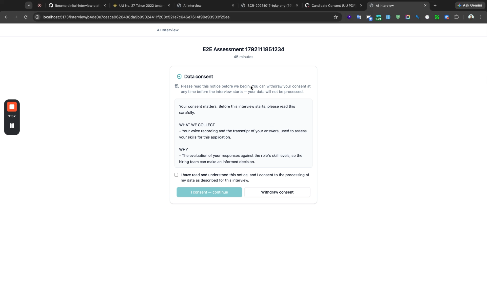
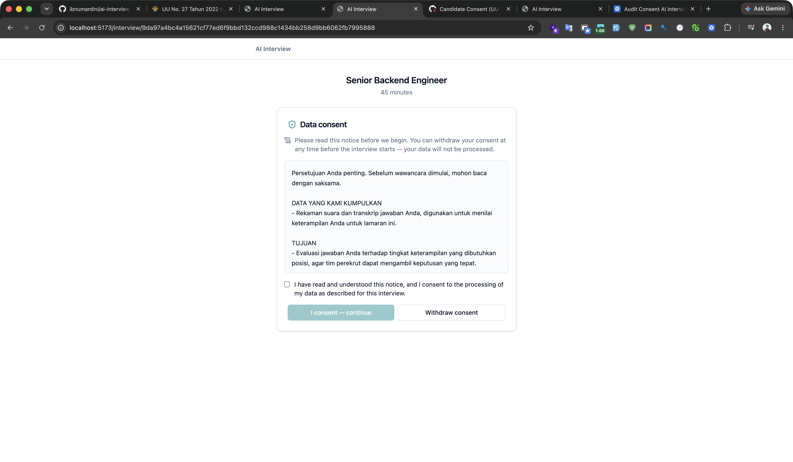
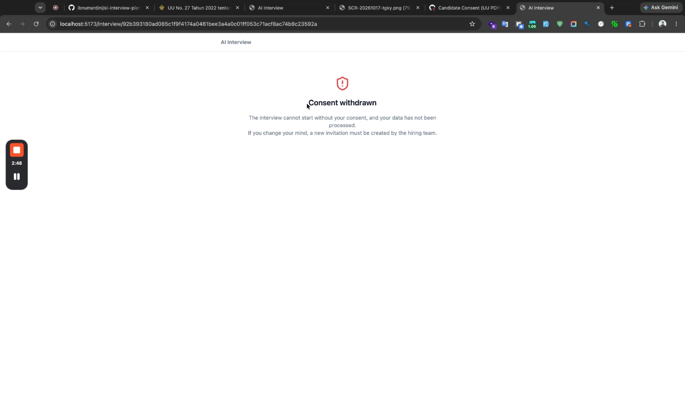
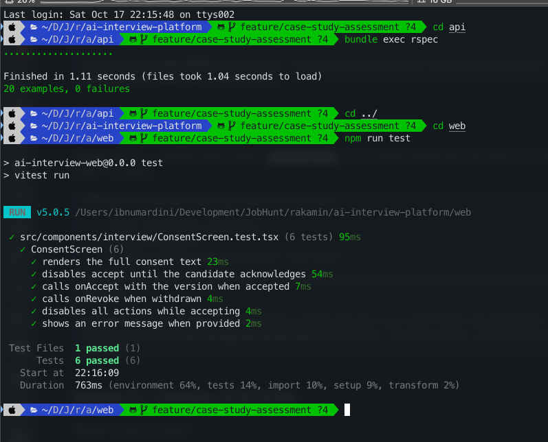

Fullstack Product Engineer — Rakamin PR: https://github.com/rakamindev/ai-interview-platform/pull/163 Video: https://www.loom.com/share/2284207a12854e4985a553d224977825 Date: 2026-10-17
Both services were run locally and explored end-to-end before any judgement.
| Service | Stack | Port |
|---|---|---|
| API | Rails 7 / PostgreSQL / Redis / Sidekiq / Gemini | 3001 |
| Web | React 18 + TypeScript / Vite / Tailwind / Radix | 5173 |
Setup blockers found & resolved:
OBJC_DISABLE_INITIALIZE_FORK_SAFETY=YESBaseline confirmed (as the brief stated): no RSpec specs, no web test runner, no CI.
A voice-based AI skills assessor: the assessor configures a role + skills (L1–L5 behavioral anchors), the candidate talks to Gemini Live over audio WebSocket, a coverage map tracks which skills have been probed live, and after the session Gemini Pro produces an L1–L5 portfolio with evidence quotes, compared against a vacancy (fit/gap), exportable to PDF.
Hard: volume, inconsistent interviewer probing, little behavioral evidence, senior roles need deep probing. Commoditized: coding quizzes (HackerRank), ATS filtering, one-way video answers. The real leverage this product occupies: adaptive, probed, voice-based behavioral assessment against an explicit L1–L5 rubric with citable evidence.
Candidates never chose this product; a wrong rating changes a real person's year. Voice is biometric (specific) data; automated rating is a decision candidates may object to (Pasal 10); Gemini is a cross-border transfer (Pasal 56). This drives the chosen revamp.
Full findings in assessment/03-step3-problem-gap.md. Highlights:
| Sev | Finding | Type |
|---|---|---|
| P0 | Invite link points to API not frontend — candidates can't start | defined but broken |
| P0 | Interview session auto-ends with error — deprecated Gemini model + keys without Live access | defined but broken |
| P0 | No test harness (API + web + CI) | never defined |
| P0 | UU PDP non-compliance — no consent, plaintext transcripts, token in URL, no audit | never defined |
| P1 | Auth trusts JWT claims without DB lookup; no users; admin-only login | defined but broken |
| P1 | Portfolio generation fails without recovery | defined but broken |
| P1 | Worker idempotency / auto-advance can mis-rate | never defined |
| P1 | Candidate UI shows "Completed" for failed sessions | defined but broken |
| P2 | B7 skill loses skill_id; signup dead route; no 404 page; create-session no error handling; deprecated model config in docs | mixed |
Constraint signal: Gemini Live is paid/licensed; end-to-end interview verification is blocked (documented). Test infra must be built from zero. UU PDP needs product/legal decisions beyond code.
Chosen scope: Candidate consent (P0-4). Highest legal + fairness impact; fully implementable without a paid Gemini Live key; spans backend + frontend.
Self-derived acceptance criteria (13 + 4 revoke cases) — see assessment/04-step4-revamp-strategy.md: consent screen before interview, accept/decline/withdraw flows, idempotency, version mismatch, ended-session 409, unknown-token 404, proof record (version/timestamp/hash), EN/ID localization, revoked-on-refresh guard.
Options evaluated:
sessions (chosen) — smallest change satisfying Pasal 20/22/24 proof; natural 1:1 with the candidate session; low walk-back cost.candidate_consents table — richer audit history but premature: no candidate identity yet, no consumer of the history.Full details in assessment/05-step5-implementation.md.
Session#grant_consent!/#revoke_consent!, POST consent + consent/revoke endpoints, candidate_info returns consent metadata + localized notice, StartHandler raises ConsentRequired (WS surfaces it, session never activates).ConsentScreen component, InterviewPage gate (accept / withdraw / revoked), revoked-on-refresh guard.bundle exec rspec → 20 examples, 0 failuresnpm run test → 6 tests, 0 failurestsc --noEmit → cleanSeeded consent_status: 'none' instead of 'given' in grant_consent! → 3 specs failed → reverted → 20 pass. The suite genuinely catches regressions.
json_error implementation passed a hash as message; the RSpec request spec caught the broken response shape, forcing a string fix.CustomSkillForm.Consent screen (EN):

Consent screen (ID):

Revoked state — interview blocked:

Test harness passing (RSpec + Vitest):
